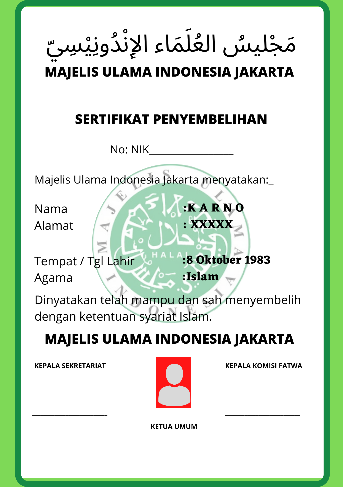

Processing
0x4cd5bffe72a78315bc69874191134ef4
Lembaga: Peternakan Sapi Jakarta Utara
Lokasi: Jl.Kampung Sapi Runtuh, Jakarta Utara
Tanggal: 5 Februari 2022
Penyembelih: Karno (Bersertifikat)
Sertifikat Penyembelih:

Proses Pemotongan Daging: